GUI test coverage — what is checked, and what is not#
The GUI is a unit and it gets tested. This page is the inventory: every aspect currently covered, the behavior the tests recorded, and — kept deliberately prominent — the aspects that are not covered yet, so nobody mistakes a green run for complete coverage.
Run them:
python scripts/run_gui_tests.py
Mechanics, conventions and how to add a test live in Testing.md §3. This page is the
coverage itself.
1. The suites#
| Suite | Covers | Combinations |
|---|---|---|
layout_matrix |
Columns × ripple dock × orientation; the fold rule in its operands, one-line strips, uniform headers, toolbar rows, depth readout, render | 16 |
stream_options |
Every stream option on every sim source × 2 columns; units, labels, depth, independence | 8 |
ripple_params |
Every editable ripple/stim parameter, GUI → backend round trip | 10 |
toolbar_layout |
Toolbar folding across viewport widths; nothing lost, never >2 rows | 15 widths |
live_view |
Traces render, streams labeled, strips collapse/pin, pin survives rebuild, vertical | ~20 checks |
band_dependency |
Derived bands auto-provisioned on 2.0 (available, not running), selectable once on, the LFP <-> ripple dependency in both directions, and the disconnected state | 24 checks, 2 sources |
error_paths |
What the GUI does when things GO WRONG: a refused select, a refused play, a source that cannot load, controls that must be disabled rather than inert | 11 checks |
audio_panel |
The audio monitor: device enumeration, follow-the-default vs pinned, the picker round trip through the backend, threshold/mute | 15 checks |
sim_picker |
The Simulated Data picker cascade: two systems at step 1, either system reaching either probe, the filter actually excluding the other system's scenarios, and the wildcard rule (a config declaring no basestation appears under BOTH) | 13 checks |
| record_flow | The recording state machine from the buttons an operator presses: idle -> armed -> recording, that ARMED writes nothing, and what actually reached the disk | 20 checks |
| shrink_window | Every supported width x dock open/closed: never >2 toolbar rows, nothing folded without a reachable chip, and the below-minimum refusal | 7 widths x 2 |
| probe_map | The probe channel map DRAWS, on a 1.0 and on a 4-shank 2.0: shank shafts, routed vs available electrodes, and the electrode-number labels -- asserted by reading the canvas pixels back, because a canvas has no DOM to check and an empty one photographs perfectly | 2 probes x 8 checks |
All drive a real browser over CDP against a real backend on a simulated source. No hardware.
All twelve drive the same renderer — the WebGL2 one in webinterface/GlRenderer.js, which is now the
only one, so there is no renderer to select. During the transition off SciChart the whole suite was
run under both renderers and was green under both; that is the evidence that removing SciChart
changed nothing the tests can see. See RendererExperiment.md.
The harness refuses to run at all unless a column has a live WebGL2 context (tests/gui/_harness.py,
after play). That check is coverage in its own right: a renderer whose context failed to create draws
a blank box, which is indistinguishable from a rig sending nothing, and every assertion below would
then be measuring an empty canvas and passing.
Every suite writes its own screenshots into developer_docs/images/gui/ as it runs, so the images on
this page are produced by the same run that made the assertions — they cannot drift from the
behavior being claimed. Only the frames embedded below are tracked in git; the rest (all 16
matrix cells, the 820px toolbar, the live-view frames) are regenerated by any run of
python scripts/run_gui_tests.py, and are gitignored so a run does not add ~14 MB of churn.
| suite | frames |
|---|---|
layout_matrix |
matrix_<axis>_<n>col_dock<on\|off>.png — all 16 |
toolbar_layout |
toolbar_1920.png, toolbar_1280.png, toolbar_820.png (cropped to the bar) |
stream_options |
stream_ap_band.png, stream_lfp_band.png, stream_onebox_adc_sdr.png (no raw frame — see §4a) |
live_view |
live_2col.png, live_3col.png, live_vertical.png |
ripple_params |
ripple_dock_params.png |
band_dependency |
band_dependency_modal.png |
audio_panel |
audio_panel.png |
sim_picker |
picker_source_menu.png |
record_flow |
record_recording_toolbar.png (cropped to the bar) |
shrink_window |
shrink_min_width.png |
error_paths |
error_refused_select.png (cropped to the bar) |
probe_map |
probe_map_np1.png, probe_map_np2.png |
The toolbar, folding#
| 1920 px — everything inline | 1280 px — view + source folded |
|---|---|
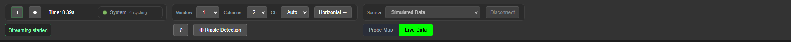 |
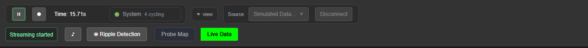 |
The bands#
| AP | LFP | OneBox ADC (SDR) |
|---|---|---|
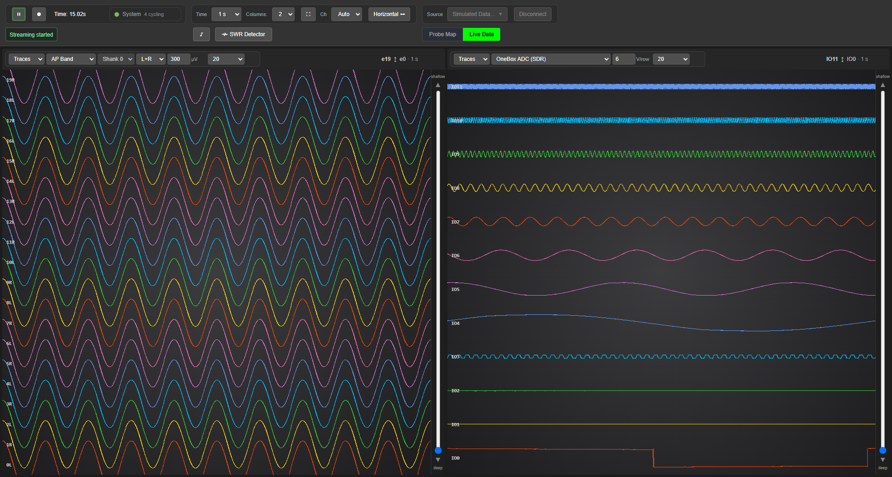 |
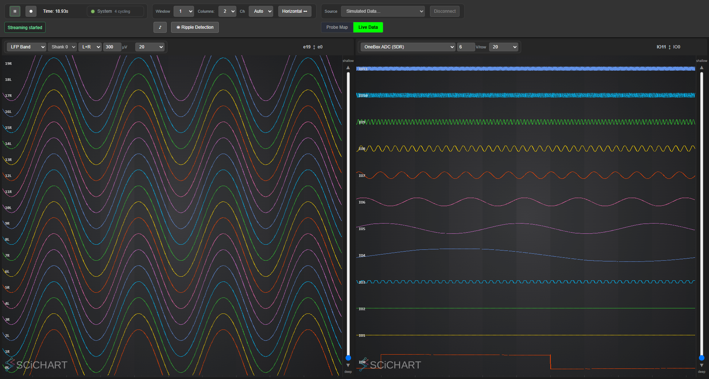 |
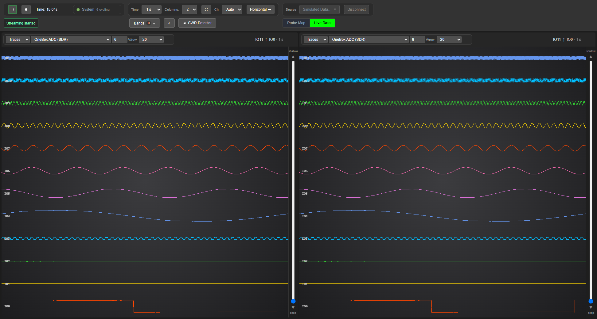 |
The ripple dock, after every parameter has been driven#
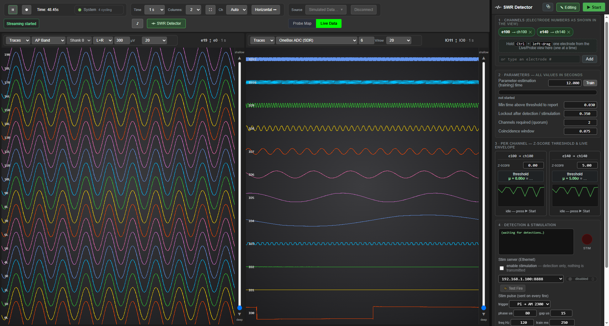
The source picker, open#
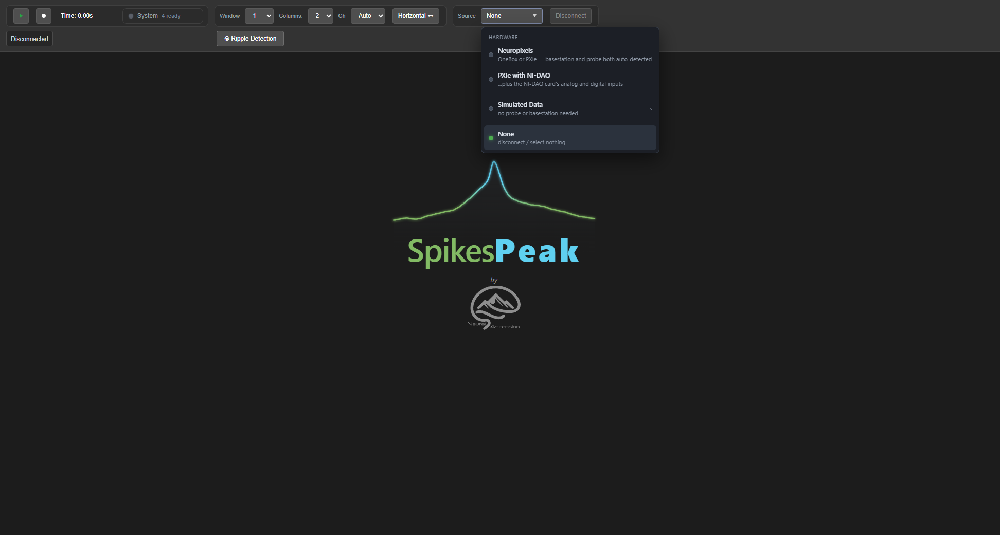
What the operator sees when it goes wrong, and when it goes right#
| a refused select — the bar stays truthful | a confirmed recording — solid, not pulsing |
|---|---|
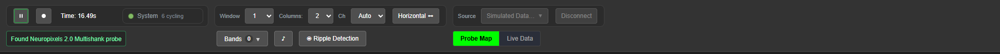 |
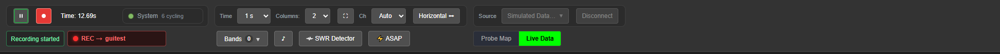 |
The narrowest supported width, dock open#
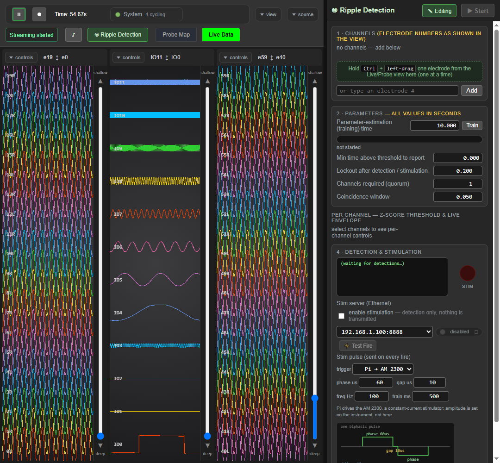
2. The layout matrix — 1–4 columns × dock × orientation#
The combinatorial case hand-testing misses. Every cell asserts: the requested column count exists, the toolbar never exceeds 2 rows, every column renders, the depth readout is never folded away, any collapsed strip still has a visible reveal chip, every expanded control strip is one line in a 46 px header, and every column in the cell agrees with its siblings about both.
| axis | cols | dock | toolbar rows | strips collapsed | first canvas | dock width |
|---|---|---|---|---|---|---|
| horizontal | 1 | closed | 2 | 0/1 | 1903×884 | 0 |
| horizontal | 2 | closed | 2 | 0/2 | 934×884 | 0 |
| horizontal | 3 | closed | 2 | 0/3 | 610×884 ‡ | 0 |
| horizontal | 4 | closed | 2 | 4/4 | 449×894 | 0 |
| horizontal | 1 | open | 2 | 0/1 | 1523×884 | 381 |
| horizontal | 2 | open | 2 | 0/2 | 744×884 | 381 |
| horizontal | 3 | open | 2 | 3/3 | 484×894 | 381 |
| horizontal | 4 | open | 2 | 4/4 | 354×894 | 381 |
| vertical | 1 | closed | 2 | 0/1 | 1903×884 | 0 |
| vertical | 2 | closed | 2 | 0/2 | 1903×417 | 0 |
| vertical | 3 | closed | 2 | 0/3 | 1903×261 | 0 |
| vertical | 4 | closed | 2 | 0/4 | 1903×155 | 0 |
| vertical | 1 | open | 2 | 0/1 | 1523×884 | 381 |
| vertical | 2 | open | 2 | 0/2 | 1523×417 | 381 |
| vertical | 3 | open | 2 | 0/3 | 1523×233 | 381 |
| vertical | 4 | open | 2 | 0/4 | 1523×127 | 381 |
‡ recorded before 2026-08-25, when this cell collapsed and its header was 36 px. Expanding the strip does not change the column's width and gives ~10 px of its height back to the header, which is where every other expanded row's 884 comes from. Marked for re-measurement rather than guessed at further — the next run rewrites this table's numbers and all sixteen frames together.
The three cells that still collapse — 4 columns either way, and 3 columns with the dock open — collapse for a different reason than the table recorded. Not because four is more than two, but because 470 px, 379 px and 507 px of column leave less than the band's 448 px. 3 columns with the dock shut is 628 px, and that is the cell that flipped.
The fold rule, and why the test states it in operands#
ChartColumn.fitStrips(): the control strip has exactly one authored shape — one row — and it
collapses behind its reveal chip if and only if that row does not fit beside the depth readout.
need = .column-controls scrollWidth
= 108+80+64+84+80 (five fixed slots) + 4×4 px gaps + 7 px padding a side + 1 px border
= 448 px
avail = .column-header clientWidth − .page-info offsetWidth − 24
collapse = need > avail
Column count and orientation are not inputs. They were until 2026-08-25, when the rule read
(!vertical && nCols > 2) || doesNotFit, and on a 1920×1080 monitor both halves were wrong:
- 3 columns, dock shut: 448 px needed, 477 px available — it fits — and
nCols > 2collapsed it anyway. Every control in the band went behind the chip while the header had room to spare. - 2 columns in a 1080 px window did not collapse; they stacked. A
@containertier had already dropped the band to its two-row shape, so the fit test measured that (274 px), found it fitting in 377 px, and left it stacked. The thing being measured depended on the measurement's own answer. A two-row strip is not a degraded state, it is the one shape nobody wants, and it was shipping.
The twelve @container tiers that authored the three shapes are deleted. Header height is 46 px
expanded, ~36 px collapsed, and nothing in between.
The test now asserts collapsed == !(oneRowNeed <= avail), both operands read from live layout,
instead of a table of expected collapse counts — because a count is display-dependent and an operand
is not. The suite runs full-screen on whichever monitors are attached: three columns are 628 px
each on the 1920 landscape screen and the band fits; the same three columns on the 1080 portrait
screen do not. A number written into the test is therefore either wrong on one of the two displays
attached to this rig, or quietly tuned to whichever one last ran green. Stated in its own operands
the assertion holds on both — and it does not go stale when a control's fixed slot width changes.
Measured after the change (1920×1080, NPX 2.0 sim):
| horizontal | column width | strip | header |
|---|---|---|---|
| 1 column, dock shut | 1894 px | one row | 46 px |
| 2 columns, dock shut | 945 px | one row | 46 px |
| 3 columns, dock shut | 628 px | one row | 46 px |
| 4 columns, dock shut | 470 px | collapsed | 36 px |
| 2 columns, dock open | 763 px | one row | 46 px |
| 3 columns, dock open | 507 px | collapsed | 36 px |
| 4 columns, dock open | 379 px | collapsed | 36 px |
Swept by width at 2 columns, the band survives 1920, 1600, 1400, 1300 and 1280 px of window and
collapses at 1200, 1150, 1100 and 1080 — at 1200 px it needs 448 px and 437 px is available.
Width is what makes a column too small, not column count. That is why live_view's collapse case
narrows the window at three columns rather than adding a fourth: adding columns no longer proves
anything about the fold path.
Vertical never collapses at any row count, which is now a consequence rather than an exemption: a stacked row is 1530–1894 px wide, so 448 px always fits.
The decision is made once per row and applied to every column (fitStrips() is static). Two
reasons, both paid for. .column-container is flex:1 1 0 and Chrome distributes the remainder in
1/64 px LayoutUnits while clientWidth rounds to an integer, so siblings at 601.98 and 602.02 report
601 and 602 and can land on opposite sides of the threshold — one collapsed column beside an expanded
one is two header heights in one row and traces starting at different Y. And the measurement has to
drop strip-collapsed to read the in-flow width; per column that is N class flips per frame, each
one a size change the chart-area ResizeObserver picks up, which calls straight back in. It took the
page down during development.
The collapsed reveal overlay keeps the old narrow three-row template on purpose. It is
position:absolute, so its rows cost neither header height nor trace height — and #view-data is
overflow:hidden, which clips an absolutely-positioned descendant, so a 448 px overlay in a column
too narrow to hold one would have its right-hand controls destroyed on the last column: 275 px worth
at 1080 px with the dock open and four columns.
Three assertions the matrix was not making#
The strip is one line, on both axes. stripH <= 40 for every column that is not collapsed. The
band must fit on one row or collapse; stacking is a bug, not a fallback.
The header is one strip tall, on both axes. headerH <= 52 for every column that is not
collapsed — a one-line strip gives ~46 px, and every pixel over that is taken from the traces.
Both of these existed before, gated behind if vertical:, and that gate is exactly why a two-row
horizontal strip ran green for months: the one axis where the band was stacking was the one axis
nobody measured. They stay scoped to expanded columns, because a collapsed reveal is an overlay whose
rows cost no height.
Every column in a cell agrees with its siblings — same headerH, same collapse state (a pinned
column excepted; a pin is the operator's explicit override). Uniformity used to be structural: one
container query, one tier, every column. Under a measurement it is not guaranteed at all, and the
LayoutUnit rounding above is a live way to lose it, so what CSS used to enforce is now asserted. A
row that disagrees with itself means two siblings measured differently, which points at
fitStrips() having run per column rather than per row.
Horizontal, 4 columns, dock open — the tightest cell in the matrix: 379 px of column against a 448 px band.
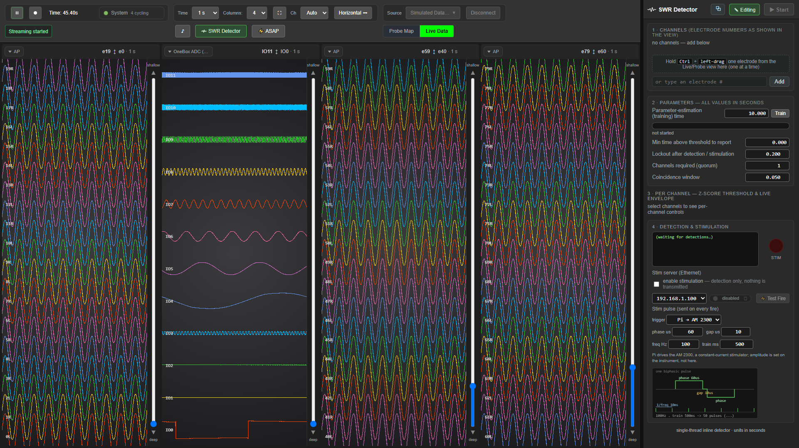
Vertical, 4 rows, dock open — the same content at ~1530 px of row, so the band fits and stays expanded:
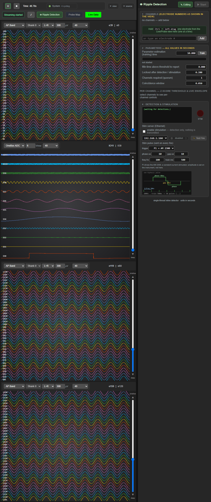
All sixteen frames are in developer_docs/images/gui/matrix_<axis>_<n>col_dock<on|off>.png, rewritten
by every run of the suite.
3. Stream options — the right view for the right band#
Every option in every column's stream selector, on both simulated sources, checked for unit, channel labels and depth readout. Selecting a band is the most-used control in the application and the easiest to get subtly wrong: the traces keep drawing while the labels or units belong to another band.
| source | options | unit | labels | depth |
|---|---|---|---|---|
| Simulated NPX 1.0 (OneBox) | AP Band |
µV | 39R 38L 37R |
e39 ↕ e0 |
LFP Band |
µV | 39R 38L 37R |
e39 ↕ e0 |
|
OneBox ADC (SDR) |
V/row | IO11 IO10 IO9 |
IO11 ↕ IO0 |
|
| Simulated NPX 2.0 Multishank | RAW Band |
µV | 39R 38L 37R |
e39 ↕ e0 |
Also asserted: the two columns are independent (driving one to the first option and the other to the last must leave both where they were put), and every selection still renders.
4. Parameter round trip — GUI → backend#
A field that accepts a value and never delivers it is the worst kind of GUI bug, because it looks like it worked. Every parameter below is set in the GUI and then confirmed on a separate WebSocket connection, so the assertion cannot be satisfied by frontend state alone.
| parameter | control | set to | GUI holds | backend reports |
|---|---|---|---|---|
| channels required (quorum) | #rd-quorum |
2 | 2 | ✅ |
| parameter-estimation (training) s | #rd-est |
12.000 | 12.000 | ✅ |
| min time above threshold | #rd-mindur |
0.030 | 0.030 | ✅ |
| lockout after detection | #rd-lock |
0.350 | 0.350 | ✅ |
| coincidence window | #rd-window |
0.075 | 0.075 | ✅ |
| stim phase width (µs) | #rd-stim-phase |
80 | 80 | ✅ |
| stim inter-phase gap (µs) | #rd-stim-gap |
15 | 15 | ✅ |
| stim frequency (Hz) | #rd-stim-freq |
120 | 120 | ✅ |
| stim train length (ms) | #rd-stim-total |
250 | 250 | ✅ |
| per-channel z-score | .rd-z |
0 / 5 / 0.00 | 0.00 / 5.00 / 0.00 | — |
The last row is the §44 regression guard: a per-channel z of 0 used to snap silently back to
3.00, because parseFloat("0") || DEFAULTS.z is 3.0 and 0 is falsy. Zero is the natural value
to reach for when deliberately provoking detections, and it was unreachable through the GUI.
Quorum needs two channels. Setting quorum to 2 with one detection channel is clamped to 1 — that is correct behavior, not a bug, and the test adds two electrodes before asking. The first version of this test did not, and reported the clamp as a defect.
4a. FIXED — a REFUSED source select reported itself as a switch#
(This section previously recorded this as "a source switch after streaming fails". That diagnosis was wrong. It is kept, corrected, because the wrong version was acted on and the correction is the useful part.)
What was recorded, and why it was wrong#
The claim was that once acquisition has run, switching to another source fails — that the previous source's resources were not released after being started. The two-minute WebSocket experiment that would have tested it was never run. It was run on 2026-08-24:
select NP1 -> play -> pause -> Disconnect -> select NP2 -> deviceReady:true, streams fine
The switch after streaming works. Nothing is left un-released.
What was actually happening#
MainController::handleConnectRequest refuses a connect while a source is still selected. That is
correct — silently tearing down a live probe because someone brushed the source dropdown is not
something an acquisition system should do. The defect was that the refusal was reported as a switch:
select NP1 -> play -> select NP2 (no Disconnect)
stateSource : Simulated NPX 2.0 Multishank <- the GUI is told the switch succeeded
deviceReady : false
guiStatus : Could not connect "…" The hardware was not detected, or is in use by another program
onSourceSelection broadcasts stateSource with the REQUESTED name before attempting the connect —
it has to go out early, because the browser's QWebChannel bind is keyed on it — and nothing put it
back. The GUI's own picker sends selectSource with no Disconnect first, so this was the ordinary
operator path, not a corner case.
So the source picker showed the new source while the OLD source's streams kept flowing. In the GUI
that presented as "the stream list did not follow the switch": the bands on offer were the previous
source's, and selecting one rendered a fallback view with 19, 18, 17 labels and a CH 19 ↕ CH 0
depth readout instead of 19R 18L 17R / e19 ↕ e0. A recording taken in that state would carry the
wrong band.
This is the same family as §41/#18 — announcing REQUESTED state rather than CONFIRMED state — on a path that family did not cover.
The fix#
A refused select now restores what actually holds: the previous source name, deviceReady: true, and
the optional modules' state (which the browser had dropped when it saw the phantom source change).
The message becomes actionable — "Still connected to X. Disconnect before selecting another
source." — instead of a hardware diagnosis for hardware that is fine.
An earlier version of this page blamed the frontend, claiming dataStore.knownStreams was never
cleared on a source change. That was also wrong: clearStreamsForNewSource() exists in main.js and
is wired into updateViewForSource(). The frontend did the right thing with what it was told; it was
being told the switch worked. Two wrong diagnoses on one defect is the reason
AgentTraps.md exists.
The harness bug it was masking#
tests/gui/_harness.py never sent a Disconnect before selectSource, so under the shared-backend
runner a test could reuse a backend that still had a source, have its select refused, and run against
the previous test's source — a dozen unrelated failures about labels and units. It worked by
accident until then: the backend auto-quits ~2 s after its last WebSocket client leaves, so each test
usually got a fresh one. "Usually" was the bug. The harness now disconnects first, which is also what
a real operator does.
4b. Two things every test now does#
Every test asserts the page threw nothing. Gui.check_clean() reads a collector installed via
Page.addScriptToEvaluateOnNewDocument — so it is in place before any application script runs — that
records uncaught exceptions, unhandled promise rejections, failed resource loads and console.error
calls. A GUI can look perfectly correct in a screenshot while throwing on every frame, and not one of
the layout or render assertions in this suite would notice. Collected in the page rather than off the
CDP event stream because python/tools/cdp.py's send() loops until it sees its own message id and
discards everything else, so events never reach the harness.
The toolbar is measured on the HEAVIEST toolbar, not the lightest. toolbar_layout used to run
only on the harness default, which is a 1.0 source — and a 1.0 source has no derived bands. The
1080 px floor had therefore been established against the fewest buttons the application can show. It
now sweeps both:
| toolbar | modules present | folds to 1080 px |
|---|---|---|
| 1.0 (light) | ripple | ✅ 2 rows, tb-peek-view from 1280 |
| 2.0 (heavy) | Bands, audio, ripple | ✅ identical |
That measurement is why the floor stayed at 1080 when the Bands button was added rather than being
widened: consolidating the two band buttons into one paid for the new one. Running that sweep is
also what found the audio button appearing on 1.0 sources, where no shipped profile declares
proc.audio at all.
5. What is NOT covered yet#
Stated plainly so a green run is not mistaken for completeness:
- System-state panel. The tables, the
This runvsTotalcolumns, the stalled vocabulary, and whether the counters actually advance. This is the surface that reported a healthy rig for three and a half minutes during the 2026-08-20 incident, so it is the highest-value gap. - Probe map tab — bank buttons, edit vs select-recording-channels modes,
Apply Map to Hardware,.imroload/save. - Per-column controls beyond the stream selector — shank, L+R/Left/Right, µV scale, channel density, the depth slider and its paging buttons.
- Toolbar controls' effects — Window (1/2/5/10 s) and Ch (Auto/20/…/120) change what is drawn; only their presence is checked, not their effect.
- Recording flow — the Set-Location dialog, arming, the REC badge truncation, files on disk.
- Backend → GUI direction. Everything in §4 is GUI → backend. The reverse (set via WebSocket, assert the GUI reflects it) is not covered.
- Error and fault surfaces — the hardware-error modal, the processor-fault relay, the source stall banner.
- Real hardware. Every GUI test runs on a simulated source by design.
6. Conventions these tests follow#
- Set state, never assume it. Orientation and dock state persist in the reused browser profile. Both were assumed once; both produced a suite that passed while testing the opposite of its labels.
- Verify the toggle took. A click that silently does nothing is how
layout_matrixpassed 16/16 while never opening the dock. - Exclude hidden-but-laid-out elements. Folded groups are
position:absolute; visibility:hidden, so they still contribute toscrollWidthand bounding boxes. A naive overflow check reports them as clipped controls — it did, and a phantom bug was one step from being written up. - CDP resizing does not fire
resize.Emulation.setDeviceMetricsOverridechangeswindow.innerWidthand re-evaluates CSS media queries, but the page never receives aresizeevent — so anything driven bywindow.onresizeor aResizeObservernever runs, and the page settles into a stable, wrong layout. Measured:
| resize events | toolbar | |
|---|---|---|
| override → 1280 | 0 | 189 px, 4 rows, no compact class |
+ dispatchEvent(new Event('resize')) |
1 | 101 px, 2 rows, tb-compact-2 |
This cost an hour and produced a convincing false regression: the toolbar appeared to have stopped
folding at every width below 1300, and the application was never at fault — the harness was
resizing in a way no real browser does. Gui.width() now dispatches the event, which restores
fidelity rather than masking a bug: a real window resize emits it natively.
-
Do not "fix" a failure by waiting longer. The same symptom was first blamed on timing and given a poll-until-stable loop. It polled to a stable wrong answer. Settling helps a race; it cannot help an event that is never delivered. Prove which one you have before changing the sleep.
-
Prove a new test can fail. Inject a regression, watch it go red, revert.
toolbar_layoutwas validated by hiding#tb-peek-sourcewhile folded: it reportedUNREACHABLEat all seven folded widths.